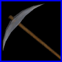
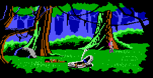
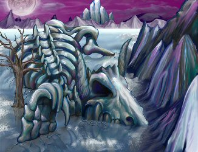

This page is here for reference only. I do not guarantee the information below is correct because it might be outdated. All the links and images have been removed as they might be outdated too.
Jump to the year: 2001 | 2002 | 2003 | 2004 | 2005
VSB Website Update - News: Sunday, August 7, 2005
Hello bold Space Questers! Still hanging out I see? Good, good. Some things are worth wasting your time on. I mean, some things are worth fighting for. Well, I don't have an update for you today but a small news bulletin to keep you all up to date with the latest news of our little gaming community.
The Vohaul Strikes Back fanproject updated their website today with a notice about a small miss claim. Go check it out. If you don't know yet what "Vohaul Strikes Back" exactly is then do check out their website. It's a very promising fangame, scheduled for release somewhere in.... Uhhhm... The future. Yeah, that's it.
Janitorial Times member New Rising Sun released a new version of his comprehensive SQ4CD update. In his own words:• Added room of "stuff removed for legal reasons" (no speech there).Please note that my frans at spacequest.net address is no longer in use. I finally got bored of all the junk e-mails. The contact page has been updated accordingly.
A big personal "thank you" goes out to Eric Weidenbacher, who recently sent me a genuine Roland LAPC-1 sound card as a sign of appreciation for my website. Now, how cool is that, thanks mate! I love getting packages through snail mail, so don't be shy and send your anthrax and death threads.
Lastly, next month I'll be leaving for England to get my bachalor degree in Multimedia Technology. Very exciting indeed. I never dared dreaming of doing a university study. But hey, if Roger Wilco managed to get a Captain rank, I might as well pull it off.
UWIN2 - Update: Sunday, July 3, 2005
I'm back to bring you the latest Space Quest related stuff, just when you started to accept the idea of SpaceQuest.Net being "dead". I've updated the following pages today: SQ5 spoof & references (3 new), SQ5 plot inconsistency (2 new), SQ6 spoof & reference (1 new) and one new fan image. Do check it out.
By the way, the artist who made the new fan image is now a member of the Space Quest 3 remake project which is alive and kicking. I'm their "creative consultant" - just so as you know! I haven't heard much from the Vohaul Strikes Back or the SQ7.Org fangame teams. A new website called "Fanventures" seems to be on top of things, having released information about the SQ3 project, Vohaul Strikes Back and about SQ7.Org. On a last Community note, there's a new website called "the Space Quest Omnipedia" - a huge SQ database. You can help building it. Submit anything SQ related that isn't on there. Hell, there's stuff on there that isn't even on SpaceQuest.Net. Quite remarkable!
Lastly, SpaceQuest.Net was under ESA investigation a few weeks ago. What this means is that this institute demanded the removal of the games downloads, per Vivendi's request (Vivendi is of course the legal owner of Sierra and Space Quest). Former Sierra CEO Mike Ryder did give SpaceQuest.Net permission to publish the games back in 2001. Sadly, this didn't convince the ESA. No matter, we worked things out. Though, I must share something with you. I learned the ESA and Vivendi were tipped by an individual who thought it was necessary to play moral Joe. Quite amazing how one fool can ruin things for 13,000 others. Mind, that's exactly how people got caught sixty years ago by the Gestapo. Bless our little snitch. Let's hope he's happy.
That's it for today, folks! It's good to be back even though the update is rather small.
UWIN
(Update Without an Interesting Name) -
Update: Saturday, April 2, 2005
Hello
dear Space Quest fans! Yes indeed, it's been a while since the
last update - 1.5 months. My study workload has become very heavy
and I'm unable to spend much time on SpaceQuest.Net.
I've removed a few funfacts because they were simply not true. Yikes, I think this is the first time I actually had to remove something from the website for the first time in 6,5 years :). No worries though because we've got three new SQ6 Spoof & References, a new SQ5 Spoof & Reference and a new SQ4 funfact. Surely we fans found out every silly joke and reference right about now? I've also added an image of the SQ4 Sierra Originals cd-rom to the "Quest for More Disk Space" misc section.
Lastly: new to the website is the Russian version of SQ1EGA and SQ2. We actually served less people in February then we did in March so its my duty to ask you to be gentle with the game downloads pages. There are a lot of people who wish to use this feature so download only one game package. You simply don't need all the different versions and languages. All the packages work so please download one file only. If people had a bit more social sense and cared a bit more about others, a lot more people are able to use our games server, without seeing it shut down within the first few days of the month. This website isn't here just for you, but for those 13,599 other people as well (a new record!).
A
Huge Pile of Updates -
News: Tuesday, February 15, 2005
I've
been extremely busy since the start of 2005 and it looks like
this is only the beginning. The workload of my school is really
piling up. I'm investing around 60 to 80 hours each week
in school stuff. Yeah, you heard me right. Though don't be sorry
for me.
I really enjoy it, but it consumes a bucket load of energy. It's
therefore not very surprising that my available time for SpaceQuest.Net is
almost non-existing. I'm afraid things will get worse in the
future. I'll be trying to start my very own company somewhere
in the third quarter this year. Excuse me for sounding over-dramatic,
but it looks as though my youth has finally come to an end. Blimey,
it took me a fair few years! It's not a decision you make overnight
to "move on". It happens gradually. You may have concluded by
now what the implications are for SpaceQuest.Net.
Rest assured, I won't stop updating. But I must ask you for more
patience. Updates will be a bit sparse. We'll see what the future
brings and we'll meet it when it does. No need to worry about
anything right now, we'll take it one step at a time. I still
find it quite amazing we have new updates at all! After all,
SQ6 hit
the shelves back in 1996/1997. If somebody told me in advance
that I would still be updating in 2005, I would
have called them crazy.
Before I start listing today's update, I'd like to announce Eperfect.net, our generous sponsor, has donated an extra 60 gigabytes of bandwidth to SpaceQuest.Net, free of charge! This means the website is adequately equiped to house around 20,000 unique visitors each month (we're getting over 12,000 right now). This also means the games downloads are available a bit longer. The games.spacequest.net account has been upgraded by 30 gigabytes, making up a total of 200 gigabytes extremely high quality bandwidth! Simply mind boggling. Still, this is being consumed by you guys within 15 days.
I was able to update SpaceQuest.Net today thanks to a great number of contributions. A special thanks to the members and guests of the Janitorial Times! The following pages have been updated today:
The custom sq computer article contains a new, rather short, explanation about which soundcards produce the best results for use with the Space Quest Series. No biggie, but it's a must read if you're interested in building your own vintage gaming computer specifically build for the Space Quest Series. Finally, I've added some additional VGA screen shots to the Space Quest 1 Screenshot page. Thanks to Space Quest fan "RDSF". I've added a new contribution to the "Cancelled Stuff" section of Space Quest 3. The Space Quest 4 "Spoof and Reference" page has been updated with four new additions! Now how cool is that? Then we have two new additions to the Space Quest 1 Funfacts page and two new Space Quest 5 Spoof and References. Lasty, one new Space Quest 6 plot inconsistency. New contributions are accompanied by a "NEW" image for easy reference. I've added one great new image to the fanfiction section. It was made by Akril. But that's not all what's new today.
Space Quest fan "New Rising Sun" who brought us the excellent patches for those nasty timer issues has released an update for the Space Quest 4 CD-Rom version. This is what he has to say:
"Against
my better judgment, I am hereby releasing an update to the CD-ROM
version of Space Quest IV. This update changes the game into
the state it should have been, in my opinion, in 1994. Changes
include:
- superior graphics, taken from the floppy version
- ability to hear speech and read text at the same time
- correct timing
- various bug fixes
The windows interpreter "SCIWV" is neither included nor supported.
Don't use previous saved games. The version number has been changed from
1.0 to 1.1.
Installation instructions:
With the replacement of nearly every single graphics resource, the usual "patch" distribution method is inadequate; instead, the full game, minus the audio file, is included. Extract the .zip archive into an empty directory. Open the RESOURCE.CFG file with a text editor and change the path specification after "audio =" to the CD-ROM or hard disk directory where the RESOURCE.AUD file resides."
There's a discussion at the Janitorial Times about this new update. New Rising Sun's new update is available at the Space Quest 4 Patches page.
Vohaul
Strikes Back Status Report -
News & Update: Wednesday, January 5, 2005
What
if the hovercraft that took Roger to the Orium Mines didn't
run out of fuel? Fanproject "Vohaul's Mines" has just
opened their new
website and has released a trailer. The trailer shows
the basic plot (which is based upon a
fanfictional story I wrote for SpaceQuest.Net)
and shows the general look and feel of the actual game.
After seeing this trailer, what conclusions can we make? Parhaps quite a few. My first impression is positive. I caught my 21-year-old-self feeling rather excited upon seeing the first original screen the team made. The graphics are very decent and I was glad to notice only a few graphics and animations taken from the original games. Some screens from The Lost Chapter and Replicated were taken from the original games and modified a bit. No challenge there. Let's hope Vohaul's Mines chooses to use hand-made backgrounds rather than plundering the original sourcecode of early Space Quest games. Vonster D Monster, designer of The Lost Chapter, is doing part-time work for the team, thus making his huge experience available to the Vohaul's Mines team. This alone should give the project a headstart in programming and in artwork. The team entrusted me with with some early in-game screenshots which really impressed me. Sadly, I'm not allowed to share those pictures with you.
Yet despite all this praise, it is clear when looking at the trailer that this project hasn't yet gone through what I like to call its "professionalization phase", which is a phase all fanprojects must go through one time or another . A phase all fanprojects must go through one time or another. It is clear that this fanproject has potential (no denying that), but it shares flaws with TLC. The backgrounds are missing detail and atmosphere: two very important elements that make scenes realistic and immersive. Instead, these are simply pretty pictures without the SQ soul. You probably ask yourself how it's possible to make 16 colour low resolution graphics immersive? Well, can you remember how Scott and Mark achieved this? By creating an old shoe box diorama-like view. Vohaul's Mines clearly misses this.
My second point of criticism of the trailer is the frequency of misspellings and improper grammar, as well as the overuse of descriptions. It comes close to being a pain. Not everything needs words to explain what's happening. For instance, we can all see the Apeman reaching behind the counter but why do we need the text that follows? It's as if the designers are scared their audience will miss things. In over-doing the textboxes a bit, they are exactly the opposite of what I think they're trying to do: Be clear and understandable. It can be said the project clearly misses somebody who's good with the ol' fashion pen. The descriptions are straight forward, dry, without humor and full with grammar mistakes. I know I'm being rather strict here. We must not forget we're seeing a very early look of the game, but that shouldn't keep the team from striving for perfection. Text and dialogue is what made the old Sierra games stand out. If there are any mistakes in the texts, people will most certainly judge the game for it. I therefore advise the team to look into this matter more closely before they release the actual game.
Is it fair to conclude THAT much from the trailer? It might sound to you like I'm axing this project. But I'm not. I think this project has truck loads of potential. It seems like they're avoiding the typical fangame route. Which is a good thing. They're not doing a new SQ. No, they're doing an alternative SQ which will start and end exactly the same as the original game thus not being an obstruction to the SQ timeline. It takes true talent to be able to tackle a fancreation like that.
What if the hovercraft that took Roger to the mines didn't crash? Coming as soon as possible. The trailer is available on their website or here at SpaceQuest.Net.
Vohaul
Strikes Back Status Report -
News & Update: Wednesday, January 5, 2005
Today's
update is quite small but nice. New are two excellent features.
First is the XML news feed available for SpacQuest.Net.
It has been online for testing purposes for several days but
today I'm announcing it officially.
Second is a new page called "Link
to Us". I've been working on some cool banners and buttons
about my website for those people out there who want to link
to my website. Let's move on to the community news.
The Vohaul Strikes Back fanproject has released a new status update. They're in dire need for new character artists! Project Leader PCJ explains:
After several months of the character art department standing still (the reasons for which are explained below), we've finally got things off the ground again. We've chosen a relatively simple style for the characters, which would allow us to recruit more artists in addition to the two we already have (Justas and Tiki). We're going to use Macromedia Flash to create 2D sprites and animations, examples of which can be seen on our website. If you think you (or somebody you know) could create similar animations and is willing to work for free, let us know!
OVERALL - Work on the game has still been proceeding as usual. A bit slower since September as most of the team still attends a school or a college, but at least the development has been steady and there are no signs of even the slightest thought of cancelling the project. The main reason for which being Marty's backgrounds which would be impossible to simply throw away, due to their infinite awesomeness.
CHARACTER SPRITES - In the previous status report, we noted that Kain took some time off after several conflicts in the team. However, he managed to disappear completely once again and we haven't seen him around for half a year, so we've decided to remove him from the team line-up. It wasn't an easy decision as all the character model files were only on his computer, so our only choice was to start from scratch. Later, Tiki joined the team as the new character artist, but he turned out to be quite busy with other projects. So it soon became clear that he can't do all the work alone and the only way to go is to choose a simple style and try to recruit more artists to reduce individual workload. The new style was developed by Justas, who is now also one of the character artists.
WRITING - Writing is coming along quite nicely. We've made a lot of progress, come up with new ideas and figured out many problems. The team was expanded once again as Karmot, a fellow Estonian, offered his services as a puzzle creation assistant after having noticed an interview with the VSB team that was published at JustAdventure in early December.
BACKGROUNDS - Apart from what I've said in the overall section, there's not much to add. Marty is still popping out new backgrounds and touching up / editing older ones wherever necessary. Despite him claiming himself to be lazy, he actually tends to be always way ahead in the schedule, compared to the rest of us.

MUSIC AND CODING - We haven't had much progress in these areas, but they're mainly scheduled for later phases of the development anyway. MusicallyInspired has returned after a long absence and will be continuing his work. BlueMax has sorted out his software problems and should also be able to begin composing soon. We haven't started with coding yet, as character sprites are necessary to make any demos and we haven't had any of those for a long time.